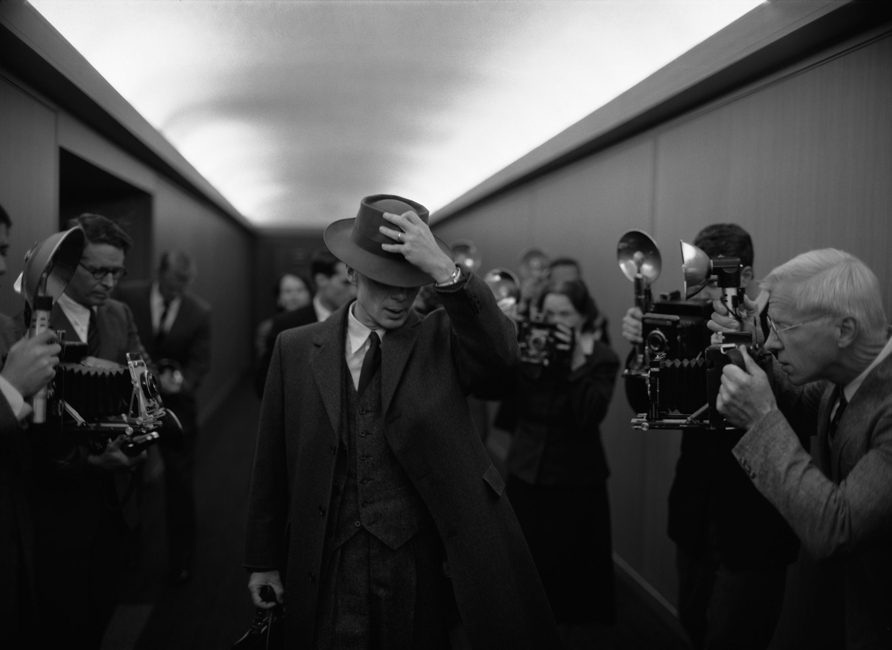

Foto's :

Cillian Murphy
Geboren: 25 mei 1976 (47 jaar), Douglas, Ierland
Murphy studeerde rechten aan de universiteit van Cork, en speelde gitaar in een band, Sons of Mr. Green Genes. Zijn aandacht verschoof echter naar acteren, en zijn eerste grote rol was die in het toneelstuk Observe The Sons Of Ulster Marching Towards The Somme in een productie van het toneelgezelschap van de universiteit. Daarna verscheen hij in de film Disco Pigs in Londen, Edinburgh en Cork. Hij verliet de universiteit voortijdig en dus zonder diploma, om zich op het acteren te richten.
Filmcarrière:Disco Pigs was zijn eerste filmrol. Hij kreeg de hoofdrol in Kirsten Sheridans film uit 2002. Hij brak pas echt door in de Verenigde Staten met de film 28 Days Later... van Danny Boyle. Hij had daarna kleine rollen in een aantal Hollywoodfilms, maar zijn rol in Batman Begins als Jonathan Scarecrow Crane gaf hem wereldwijd meer naamsbekendheid, samen met zijn hoofdrol als Jackson Rippner in Wes Cravens thriller Red Eye. Hoewel Murphy uiteindelijk de rol als Jonathan Crane kreeg, deed hij in eerste instantie auditie voor Batman/Bruce Wayne. Die rol ging uiteindelijk naar Christian Bale, maar Christopher Nolan was zo onder de indruk van Cillian Murphy's auditie, dat hij hem als Dr. Crane inzette. Cillian zou in alle drie Batman-films van Nolan meespelen, net zoals in Inception en Dunkirk. Zijn optreden als travestiet in Breakfast on Pluto bezorgde hem een Golden Globe-nominatie. Ook is hij bekend van de serie Peaky Blinders waarin hij de hoofdrol speelt als Thomas Shelby[1], een ganglord in Birmingham. In 2023 speelde hij de hoofdrol in Oppenheimer van Christopher Nolan, over de wetenschappelijk leider van het Manhattanproject.